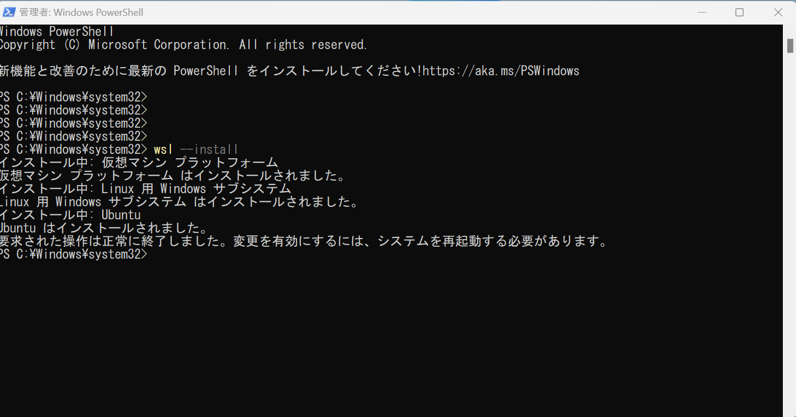
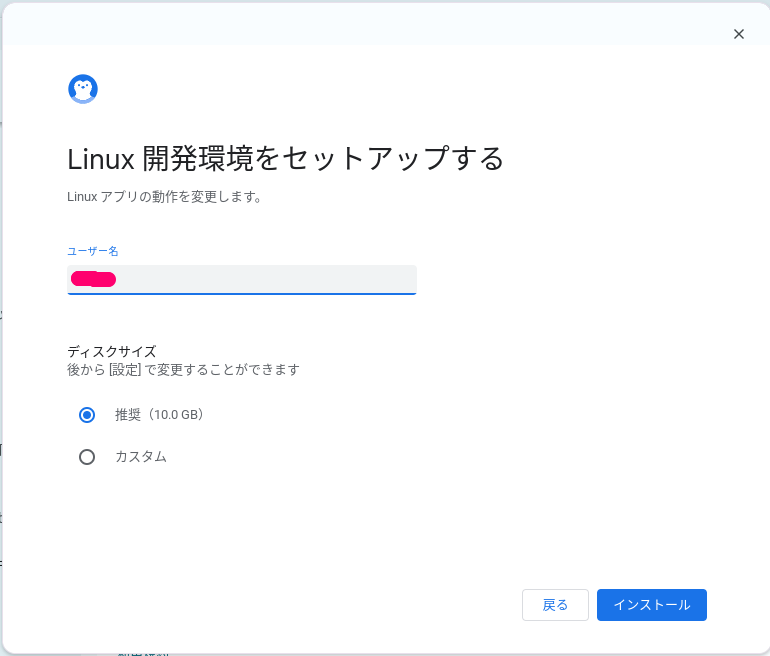
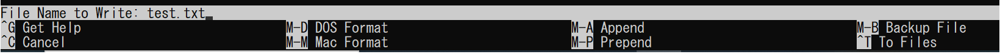

UNIX Basic 1
ユニックス
UNIXはwindowsとは別の系統をもった歴史あるオペレーティングシステムで、すでに半世紀以上の開発期間を経て様々なかたちで派生・発展してきたIT産業におけるもっとも重要な遺産の一つです。それはオペレーティングシステムだけではなく、デーモンと呼称されるプログラム群や先人たちによって考え抜かれたシンプルかつ高機能なコマンド群を持った、容量にして大きくしても10Gバイトに満たない、小さくすれば1Mバイト以下にもすることができる不思議なソフトウェアです。現在、UNIXから派生した様々なシステムがインターネットの裏側で動く主要なアクターとなっていますが、そのデーモニッシュな働きはどこか恐ろしく、どこか美しい、さながら機械仕掛けの世界の裏側のようです。
UNIXの歴史はwikipediaに詳しく載っていますのでご確認ください UNIX wikipedia
Linuxとオープンソース
UNIXが発展する歴史の中で、プログラムを無償で公開し、公開したプログラムをコミュニティの中で共同開発するという発想が生まれました。それはオープンソースと呼ばれ、ITテクノロジーを支える非常に重要な要素になっています。オープンソースとして開発が進められるLinuxはUNIXの仕組みを継承し、独自のコミュニティを通じた開発により大きく成長しました。オープンソースはコードが公開され、検証されたソフトウェアとして社会から信頼されています。結果として、現在インターネットで動くシステムの大部分がLinux上で動いています。無償で誰にでも取り組めるLinuxを学ぶことがITテクノロジーを学ぶことの一番の近道といえます。
Hack
Hackというのはシステムのハッキングという意味合いもありますが、ゲームをHackする（攻略する）といったような前向きで楽しい取り組みをさします。早速環境を作ってLinuxをHackしていきましょう。以降の記述は場合によっては退屈かもしれませんが、Linux上でのプログラミングを理解し、さらに21世紀IT塾のコアコンテンツであるsmall shellを使うために最低限理解しておくべきコマンドと概念を記載していますので、どうぞ手を動かしながら理解してもらえれば幸いです。
Windowsでの環境構築
お手持ちのwindows上でLinuxを動かしてみましょう。詳細はMicrosoftの公式サイトをご確認くださいWSL install
以下はwindows11環境でのWSL(windows subsystem for Linux)インストールの例です
powershell起動
powershellを検索して管理者として実行しましょう
wslインストール
wslを以下コマンドにてインストールしましょう
wsl --install
Warning
Linuxのイメージとして1〜2GB程度の大容量ファイルをダウンロードしますので、予めネットワーク負荷が上がることに留意しておいてください
 その後、windowsを再起動するとubuntuのインストールが自動で走りますので10分程度お待ちください。 問題なくinstallされると、User NameとPasswordが聞かれますので、任意の名前とパスワードを設定してください
ubuntu起動
アプリとしてubuntuが使用可能になりますので起動してください
ubuntu起動後は Linuxの構造に進んでください
Chromebookでの環境構築
Chromebook上の開発環境としてLinuxをインストールすることが可能です、公式なマニュアルとしては公式サイトを確認してください。以下は例となります
Linuxインストール
左したメニューからLinuxの詳細設定を検索して選択してください
Chrome OSについてという設定項目が出てきますので、下にスクロールします
Linux開発環境の設定をクリックします
Linux設定についてのダイアログが始まりますので、次へをクリックします
ユーザー名を指定し（以下例ではnaruoとしています）、インストールをクリックします 
Warning
Linuxのイメージをダウンロードしてインストールしますのでインストールには数分かかりますのでそのまま待ってください。また、1〜2GB程度の大容量ファイルをダウンロードしますのでネットワーク帯域を使用しますので注意してください
Linux起動
Linuxが問題なくインストールされると自動でターミナルがが立ち上がって来るためそのまま使用できます。
なお、Chromebookを再起動した際にターミナルを起動したい場合は以下の通りLinuxターミナルを検索し起動してください
penguinというのがLinuxターミナルになります
Linuxの構造
環境ができたらさっそく、Linuxの構造を見てみましょう。ubuntu起動後（ログイン後）にcd /と入力し、その後ls -lと打ってみてください Linuxのディレクトリ構造が一瞥できます。"/"はルートと呼ばれ、ファイルシステム上の頂点を意味します。それはいわばファイルシステムのルーツを表します。
cd /
ls -l
以下はUNIXの一般的なディレクトリ構成になります、ちなみにディレクトリとは箱のようなもので、箱の中に箱やファイルが入っている状態がlsで確認できると思っていただければと思います
|-root (始点)
|-/lib
|-/etc
|-/sbin
|-/bin
|-/tmp
|-/usr/local
|-/home
|-/var
また、続いてsudo suとwhoamiと打ってみてください。rootと結果が返ってくると思います。これはLinuxにおける特権ユーザーであるrootユーザーになっているということを意味します。rootとはファイルシステムの起点を表すと同時に、ただ一つの特権ユーザーを表す二重の意味を持った非常に重要な概念なのです。sudoの際のパスワードはwsl作成時に設定したパスワードを入力してください
sudo su
whoami
カーネル(kernel)とシェル
次にログインしているLinuxのカーネルバージョンを確認してみましょう
uname -a
とコマンドライン上で打ってみてください。カーネルのバージョンが表示されるはずです。カーネルとはオペレーティングシステム(OS)のコアであり、主にハードウェアの制御を行います。OSに対する命令はログインしたプロンプトに入力できますが、そのプロンプトがシェルになります
# IMAGE
コマンド > コマンドラインインターフェース (シェル) > カーネル (ハードウェア制御)
基本操作
rootになる
Linux上で作業をする際に、特権ユーザーになって作業することがあります。その際、root（特権ユーザー）への昇格のためには主にsuコマンドを使います。パスワードを求められますが、suコマンドの場合root（特権ユーザーの）のパスワードを入力する必要があります
su
一方で、特権ユーザー権限で特定のコマンドを実行したい場合はsudoと打つことで、一般ユーザーのまま特権ユーザーの権限でコマンド実行が可能です。sudoでのコマンド実行の場合、コマンド実行履歴がすべてログに残るため透明性がより増します。なお、sudo実行時に求められるパスワードはログイン中のユーザーのパスワードになります
sudo #root権限でのコマンド実行
以下はroot権限で/etc/passwdファイルを開いている例てす
sudo cat /etc/passwd
ディレクトリを確認する
Linuxへログインした際に、テキストラインのインターフェースしかないため、自分がどこにいるのかわからくなることが多々あります。そんなときはpwdとうって自分の現在地を確認してください。その際、表示される現在のディレクトリをカレントディレクトリと呼びます
pwd
以下は/home/ubuntu配下でpwdを実行した結果です、/区切りで表示されるディレクトリ構造をディレクトリPATHとも呼びます。以下例のように実際にコマンドをうってみましょう
Note
冒頭の$はシェルのプロンプトですが、$ のあとにコマンドを入力していると思ってください
$ pwd
/home/ubuntu
リストを表示する
pwdコマンドでカレントディレクトリを確認したら、続いてlsコマンドで配下のファイルとディレクトリを確認してみましょう。lsはディレクトリ配下にどういったディレクトリとファイルがあるのかを表示できます
ls
ディレクトリを移動する
現在地が確認できたら、任意のディレクトリへ移動してみましょう。以下は/varディレクトリへの移動の例です
cd /var
親ディレクトリへ移動する場合は".."が親を意味します
cd ..
子ディレクトリへ移動したい場合は./で指定しましょう。"."はカレントディレクトリを意味し、"./"は現在のディレクトリ配下の、という意味を持ちます
cd ./任意のディレクトリ
相対PATHと絶対PATH
ディレクトリやファイルを指定する際、相対PATHと絶対PATHの二通りの指定方法があります。カレントディレクトリからの経路を記述するのが相対PATHで、rootからの階層を全て記述するのが絶対パスとなりますが、いずれも有効な指定方法になります。以下は/home/ubuntu配下にtestというディレクトリがある場合の指定例です
#絶対PATHでの指定
ls /home/ubuntu/test
cd /home/ubuntu/test
#相対PATHでの指定（/home/ubuntuがカレントディレクトリの場合）
ls ./test
cd test
ファイルを開く
ファイルの中身を表示する方法はいくつかありますが、主にcat, more ,lessなどを使うことが多いです。catはファイルを一度に表示し、moreやlessは少しずつ表示することができます
cat 対象ファイル
more 対象ファイル
less 対象ファイル
例としてubuntuのOSバージョンファイルを開いてみましょう
# 絶対PATHでの表示
cat /etc/os-release
ファイルを検索する
特定の名前のファイルを検索する場合、findというコマンドを使います
find ディレクトリ -name 対象ファイル
以下は/var配下でlastlogという名前のファイルを検索しています
find /var -name lastlog
文字を検索する
特定の文字がファイル内に含まれるか検索したい場合、grepを使うことができます
grep 検索ワード 対象ファイル
例としてos-releaseファイルに含まれるubuntuという文字を検索してみましょう、grepコマンドによりubuntuという文字が含まれる行が出力されます
grep ubuntu /etc/os-release
大文字と小文字を区別しない場合-iオプションをつけましょう
grep -i ubuntu /etc/os-release
ディレクトリを作る
編集権限のあるディレクトリであれば、ディレクトリを新規で作成することもできます。-pオプションをつけると複数階層のディレクトリを一括で作成することができます
cd $HOME
mkdir -p ./layer1/layer2
対象をコピーする
ファイルやディレクトリをコピーする場合cpコマンドを使ってください
cp 対象ファイル コピー後の名前
cp 対象ディレクトリ コピー後の名前
cpに-rオプションをつけるとディレクトリ全体をコピーできます
cp -r 対象ディレクトリ名 コピー後の名前
対象を移動する
コピーではなくmvコマンドによって名前変更することもできます
mv 対象ファイル名 変更後の名前
mv 対象ファイル名 移動後のPATH
空ファイルを作成する
中身のないファイルを作成する際にはtouchコマンドを使うのが一般的です
touch ファイル名
ファイルを削除する
rmコマンドを使うことでファイルやディレクトリを消すことができます
rm ファイル名
-iオプションを付けることで消す際に最終確認が可能です。
rm -i ファイル名
ディレクトリを削除する
rmにまた、-rオプションをつけることで再帰的に消すことができます、-fオプションを着けると強制的に消すことができます
rm -r ディレクトリ名
rm -rf ディレクトリ名 #再帰的に強制削除
ディレクトリを消す場合はrmdirコマンドも使うことができます
rmdir ディレクトリ名
ファイルシステムを確認する
ファイルシステムの構成や使用量を確認する場合、dfコマンドを使ってください。df -hオプションを付けることで人が読みやすいフォーマットにすることができます。ちなみにファイルシステムとはディレクトリやファイルを内包する大きな箱で、その機構全体をファイルシステムと呼んでいると思っていただければと思います
df -h
disk使用量を確認する
ディレクトリ毎のディスク使用量を確認したい場合はduコマンドを実行してください。その際も-hオプションをつけることでより読みやすくなります。以下はカレントディレクトリ配下のディレクトリ毎のディスク使用料を確認するコマンド例です
du -h .
パーミッション
パーミッションとは、ファイルやディレクトリに設定された属性で、所有者に対する権限、所有者所属グループに対する権限、それ以外のユーザーに対する権限の3つの権限をもちます。参考程度に以下を確認いただければと思います
# 権限
r - read only #読み取りのみ
w - read and write #編集可能
x - exec #実行権限
# 数値化された権限
+4 - r
+2 - w
+1 - x
パーミッションと所有権はchmod及びchownコマンドにより変更できます。また、権限はls -lオプションで確認することができます。その際、ls -lの結果は、所有者に対する権限、所有者所属グループに対する権限、それ以外のユーザーに対する権限の順に表示されます
chown
chmod
ls -l
以下は"test"ファイルの権限を所有者とへは全権限を、所有者と同一グループ所属するユーザーには読み取りと書き込み権限を、それ以外のユーザーには読み取り権限のみを付与する例です
$ chmod 764 test
$ ls -l test
-rwxrw-r-- 1 ubuntu ubuntu 0 Jan 22 19:30 test
また、以下はtest_dirの所有者を変更し、所有者以外を一律読み取り権限のみとする例です
$ chown -R ubntu:ubuntu test_dir
$ chmod -R 744 test_dir/
$ ls -ld test_dir/
drwxr--r-- 2 ubuntu ubuntu 4096 Jan 22 19:31 test_dir/
入出力
文字を出力させる
文字はprintfコマンドやechoコマンドで出力することができます、以下は"Hello Wold"を出力した例になります
$ echo "Hello World"
Hello World
ファイルに書き出す
出力はコマンドラインに出すこともできれば、ファイルに書き出すこともできます。リダイレクトを使用すればコマンドラインから出力先を変えることができます。
# recirect
> ファイル上書
>> ファイル追記
以下はechoの出力先をファイルに変えた例です
$ echo "Hello World" > echo.txt
$ cat echo.txt
Hello World
ファイルに追記してみましょう
$ echo "Hello World" >> echo.txt
$ cat echo.txt
Hello World
Hello World
再び">"を実行するとファイルが上書きされます
$ echo "Hello World" > echo.txt
$ cat echo.txt
Hello World
各種出力
上記例は標準出力をファイルに向けている例になりますが、標準以外のエラー出力もファイルに向ける場合は 2> or 2>> を利用してください
2> エラー上書
2>> エラー追記
以下はエラー出力をファイル書き出しをしている例になります。存在しないディレクトリをlsしています
#エラーをそのまま表示します
$ ls /abc
ls: cannot access '/abc': No such file or directory
#エラーをファイル出力に向けます
$ ls /abc 2> error.txt
$ cat error.txt
ls: cannot access '/abc': No such file or directory
#エラーを追記します
$ ls /abc 2>> error.txt
$ cat error.txt
ls: cannot access '/abc': No such file or directory
ls: cannot access '/abc': No such file or directory
nano
nanoはLinux上でテキスト編集する際にもっとも使い勝手が簡単なエディタです、test.txtをnanoを使って作成してみましょう
ファイルを編集する
nano test.txt
テキストエディタが起動したら、そのままabc<改行>defと追記してみましょう、下部にメニューが表示されていますがいったん気にせず入力しましょう
nano test.txt
--code--
abc
def
--------
行をコピーする
行をコピー（カット）したい場合はCtrl + kを使います
Ctlr + k
ペーストする
行をペーストする場合はCtrl + uを押してください
Ctrl + u
元に戻す
記入した内容を元に戻したい場合はAlt + uを押してください
Alt + u
元に戻した内容を取り消したい場合は Alt + eを押してください
Alt + e
検索する
ファイル内の文字列を検索したい場合、Ctrl + wを入力した後、検索ワードを入力してください
Ctrl + w
移動する
ファイル内の移動をスムーズに行いたい場合、ショートカットキーで一番下に移動することができます
行の最初に移動する
Ctrl + a
行末に移動する
Ctrl + e
次のページへ移動する
Ctrl + v
前のページへ移動する
Ctrl + y
上書する
nanoで上書したい場合はCtrl + oと打ってください。その後以下のようなメニューが出てきますが、気にせずEnterを押してください 
終了する
nanoを終了したい場合はCtrl + xと打ってください、もしも内容が保存されていない場合は保存するかどうかの確認がされますが 保存する場合はyと打ってください。保存しない場合はnと押すか、cと入力してキャンセルしてください
上書保存となった場合は先ほどと同じく、上書の確認メニューが表示されますが気にせずエンターを押してください
man
manコマンドは各コマンドの使用法を確認するときにつかうことができます、
man $command
例としてcatコマンドのオプションをmanコマンドで確認してみましょう。
man cat
コマンドとタイピング
ここまでご紹介したコマンドは、慣れると打っていて楽しいものですがタイピングが苦手な方には取り組みにくいかもしれません。Linuxのシェルにはコマンドラインの補完機能がありますのでコマンドに続いてtabキーを打つことで様々なhintが表示されます。補完機能は大変便利ですのでぜひ使ってみてください。ただ、便利な補完機能はともかくとしてブラインドタッチは最低限のITリテラシーとして身に着けておくことをお勧めします。タイピングの練習ができるサイトも多くありますので、苦手な方はタイピング練習にも取り組んでみてください。